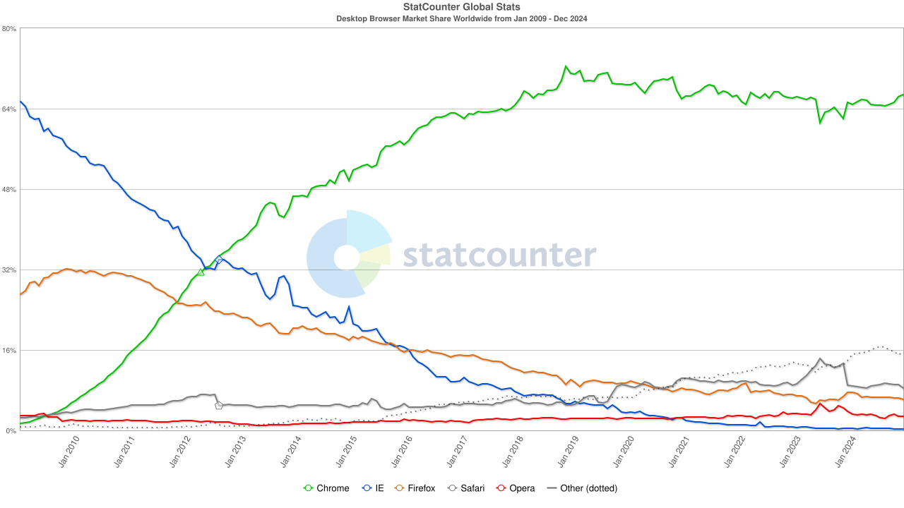

Adopting Firefox and Bitwarden as daily drivers
Google Chrome has been my daily driver for a really long time; so long, in fact, that all I remember was the initial frustration when it first came out without a release for the GNU/Linux platforms. I don't remember why, or even whether, I was so eager to jump ship, and at this point I can only guess that the old ship was the one I'm preparing to jump back to: Firefox.
It seems on-line life has gotten a wee bit more comp-lic-ated that it was back in 2008, when smartphone apps were a new thing, YouTube had only 720p video, and Spotify was brand new...
And one of the worst thing back in those days was that a single web browser had so much market share, many (too many) developers would not care much about people, including paying customers, using any other browser. The landscape has since changed, only to essentially come back round to the same old problem:
 Source: StatCounter Global Stats - Browser Market Share
{kind=link}
These days there are other problems; developers and companies understand that users must be respected even if they don't use the one most popular web browser, operating system, screen resolution... well, at least more developers care, but that's not enough; still too many don't, and so We Have A Browser Monopoly Again and Firefox is The Only Alternative Out There.
The PLN
With a significantly more complex on-line life and stronger dependencies on many more on-line services, one does not simply leave everything behind. Chrome used to be particularly useful thanks to many extensions, which would make development easier or enable workarounds on half-broken sites. These days I find its integrated password manager with cloud-based storage, along with very conviniently accessible multiple profiles, the more useful features in a modern browser. Firefox stores passwords only locally, which essentially means no multi-device password manager, but at least multiple profiles are supported if only less convenient to use.
Settings
Default settings are seldom the best for anyone; if anything, they are the one side does not exactly fit anybody at best, or what they want for you at worst. Either way, the following changes to default settings are, if not necessarily vital, at least worth considering:
General
Startup
☑ Open previous windows and tabs
I like to enable this option to easily go back to consistently restore previous sessions each time. There is a mostly fixed set of sites I like to keep pinned because I used them on a daily basis, and beyond those I also like being able to just close the browser with the peace of mind that I can easily and quickly go badk to all of them by just launching the browser again.
☐ Ask before closing multiple tabs
This option is useful to avoid accidentally closing a window, although even then
it is not too hard to get those tabs back: just reopen the relevant profile and
then use the Control+Shift+T shortcut to reopen recently closed tabs.
Language and Appearance
Website appearance: Dark
I prefer dark themes on most websites, so I like to set this to Dark.
There are many more themes available to further customize Firefox appearance; these may be useful later to make different profiles visually distinct.
Zoom
Working regularly on high DPI screens such as 4K and 2K monitors, I like to keep Default zoom at 120%.
Language
This is an interesting one if you are a multilingual person; even if you can just read additional languages, it's useful to Set Alternatives and add those languages, so that websites that are available in those languages are not unnecessarily translated.
Digital Rights Management (DRM) Content
☐ Play DRM-controlled content
This option is necessary to watch video in the most protective platforms, e.g. Netflix Error F7701-1003 requires enabling DRM to play videos, Spotify requires it to play music, etc.
It may make sense to have a dedicated profile with this enabled, while leaving it disabled on all/most other profiles to avoid misuse or DRM Apply this workaround to avoid epetitive nagging for those profiles that are meant to never play DRM.
Home
Firefox Home Content
☐ Web Search
I see no need to have a search bar in the home page, since the same search is readily available in the location bar already and that's where the keyboard focus goes by default. The screen space saved by removing this can be better used to display other, more useful links.
☑ Shortcuts
Shortcuts are good, but I rather not have ☐ Sponsored shortcuts.
☑ Recent activity
Recent activity provides bigger page thumbnails from various sources, all of which seem interesting enough to leave enabled and even allow this to take 2 or more rows.
Privacy & Security
Browser Privacy
Website Privacy Preferences
☑ Tell websites not to sell or share my data
This enables Global Privacy Control which operates as a “Do Not Sell” mechanism in some US states such as California, Colorado and Connecticut. It may also be used to indicate an opt-out of targeted advertising or general request to limit the sale or sharing of your personal data in those jurisdictions, as well as in jurisdictions such as the EU, UK, Nevada, Utah and Virginia.
Passwords
☐ Ask to save passwords
Firefox built-in password manager stores passwords only locally, optionally protected by a primary password. While this is fine for a single person using a single computer, as soon as multiple users and/or devices are involved, it becomes more recommendable to disable this in favor of a 3rd-party password manager.
Autofill
☐ Save and fill payment methods
This should only be enabled on specific profiles used for shopping.
Firefox Data Collection and Use
☐ Allow Firefox to send technical and interaction data to Mozilla
Firefox Privacy Notice explains many ways in which such technical and interaction data, including To serve relevant content and advertising on Firefox New Tab which is not going to work anyway after disabling ☐ Sponsored shortcuts.
☐ Allow Firefox to send backlogged crash reports on your behalf
Website Advertising Preferences
☐ Allow websites to perform privacy-preserving ad measurement
Disable Privacy-Preserving Attribution because, quite frankly, even Privacy-Preserving is not unlikely to end up leaking a bit too much.
Security
HTTPS-Only Mode
🔘 Enable HTTPS-Only Mode in all windows
⊙ Enable HTTPS-Only Mode in private windows only
⊙ Don’t enable HTTPS-Only Mode
HTTPS-Only Mode in Firefox should be enabled by default everywhere; given how HTTPS is actually supported, often even enforced, by most websites. Accessing HTTP-only sites remains easy and exceptions can be added to make them permanent.
DNS over HTTPS
Enable DNS over HTTPS using: Default Protection
DNS over HTTPS protection levels higher than default are only useful when a specific DNS provider is preferred, or when failing to resolve DNS queries is preferred over using non-HTTPS resolvers.
Sync
This provides a secure method to synchronize data across Mozilla applications using a Mozilla account. Currently exclusive to Firefox, Sync ensures data is effortlessly shared and up-to-date. This enables seamless browsing across multiple Firefox instances with bookmarks, logins and passwords, addresses, credit cards, extensions and important settings kept consistent and accessible across all devices.
Create a Mozilla account and keep the Recovery Keys safe. These can be saved later using a password manager.
Displays a shortcut to prompts when you select text. Firefox sends the text, page title, and prompt to the chatbot.
Firefox Labs
Customize your browsing
☐ AI chatbot should probably stay disabled until it has been thoroughly tested and confirmed more useful than harmful. So far the available community feedback seems overwhelmingly negative.
This
may be interesting in the future if/when employing a local LLM, there is a
way to change about:config to set browser.ml.chat.provider to any URL and,
if that URL accepts passing in prompts with ?q=, the context menu works too.
Profiles
Firefox Profile Manager may not be as convenient (and pretty) as Chrome's, but it does let you create, remove or switch profiles.
Open about:profiles in a tab to see the list of profiles, create new ones,
make any one of them the default profile, and launch any in a new window.
To directly launch a specific profile by clicking on an icon, create desktop
launchers making use of the
-P "profile_name"
command line flag, or use -P alone to launch only the
Profile Manager.
All the above Settings are specific to each profile, so that each user can have their own profile with individual settings, etc. The most important settings are also stored online via Sync, so it also makes sense to keep each profile synced to its own Mozilla account.
That means maintaining a number of Mozilla accounts, each with either their own unique email address and password, which can lead to keeping track of many accounts and passwords; too many to have only in one's head (or not-so-secure places), so better setup a password manager.
My preferred practice is to create a profile for each active account; meaning accounts (Apple, Google, etc.) that I use on a daily basis, not necessarily accounts like a dedicated one for the Android TV in the living room that is used by the whole family.
Right after creating each profile,
- Install the Bitwarden Password Manager (assuming the password manager is already set up), so that it can be used when creating the Mozilla account.
- Adjust all the above settings; in particular, disable the built-in option to ☐ Ask to save passwords so that Bitwarden is used.
- Install a visually distinct Theme.
- Create an account at accounts.firefox.com and save the credentials to Bitwarden.
- Enable Sync in Firefox settings (requires logging in again).
- Install whatever other Extensions are relevant.
Themes
Themes are not only pretty to look at (although some of them get old real fast), they are also useful to make each profile visually distinct. Scrolling through the top rated themes I liked a few:
- Animated Miku Dance
- ANIMATED sea sunset 02 by candelora
- chihiro
- Cyberpunk [Animated]
- Fire Fox, The Anime Girl : Nebula Space [Blue]
- Hacker (Animated)
- Halloween Moon Bats
- Kirby9
- Nyan Cat (Animated)
- Praise the sun (animated)
- Purple starfield - Animated
- Sakura Blossoms & Birds by MaDonna
- Spirited Away (Animated)
- TARDIS ⍟ animated
- Totoro 12
Extentions
There are many many lots of Firefox Extensions to tweak how it behaves, or how websites look like, or behave. What follows is only a handful I found worth at least trying, to see how it goes...
Dark Reader
Dark Reader makes most websites look like they have a dark mode. It turns out a bit hit and miss, some websites will look good enough, other not really good, while a few will look pretty bad, sometimes to the point of being unusable.
uBlock Origin
uBlock Origin is probably the most transformative extension; makes the Internet bearable. (again). Ads are not even the worst part of the Internet enshittification, so this extension helps dealing with many more of those things that make the Internet a sorry place.
After installing the extension, I like to set it to prefer Dark theme (under Settings) and enable all the additional Filter lists: Cookie notices, Social widgets, Annoyances, Regions, languages.
Sponsor Block
SponsorBlock makes YouTube bearable (again). Sponsors may or may not be the better solution for content creators to sustain their business, but after well over a decade putting up with sponsor segments, I'm quite ready to not see them again. Most (if not all) of what I watch on YouTube, especially those I watch regularly, are creators I really like and support financially directly; they'll be okay. I get precious little time to catch up with their videos, so I set this up:
Under Behavior:
- Unpaid/Self Promotion: Auto skip
- Interaction Reminder (Subscribe): Auto skip
- Highlight: Auto skip to the start
- Intermission/Intro Animation: Auto skip
Under Interface:
- Disable Show notice after a segment is skipped
- Enable Hide clutter in segment list group
- Enable Hide prompts about new features
- Enable Hide donation link
- Enable Hide options not available without extra payment
Undeer Backup/Restore, save the settings to file (SponsorBlockConfig.json)
to then easily apply the same settings to other profiles.
Return YouTube Dislike
Return YouTube Dislike should not be as needed as it sadly may still be; as much as YouTube is full of great content, there is also many many lots of the opposite and the number of dislikes should be a useful signal to keep an eye on.
Privacy Badger
Privacy Badger automatically learns to block invisible trackers.
Search by Image
Search by Image makes effortless reverse image searches possible, and comes with support for more than 30 search engines.
Augmented Steam and SteamDB
Augmented Steam and SteamDB add small but nice-to-have improvements to the Steam store, which I'm mostly curious about even though I may visit that store only a few times per year.
The most welcome features I would say are the ones that get rid of repetitive, useless and/or annoying behaviors, such as
- Skip age check page
- Remove "You are leaving Steam" link filter from external sites
- Hide "Open in Steam" banner
ActivityWatch
ActivityWatch is necessary (or just useful) to report active browser tags to the Self-hosted time tracking with ActivityWatch.
Account-isolation Containers
Firefox Multi-Account Containers (explained in Multi-Account Containers), and the Facebook Container in particular, seems interesting for cases where Facebook or similar web apps are unavoidable. Since I'm pretty good at avoiding Facebook, this shall stay filed under Interesting, Revisit Later If Needed.
NoScript Security Suite
NoScript Security Suite seems a bit too strong and restrictive, for instance Discord web app turns into an empty void when this is enabled. More concerning would be e-Banking web apps or other real-life mission-critical web apps that depend, for entirely legit reasons, on scripting techniques that this extention would flag as malicious.
DeArrow
DeArrow is a paid browser extension: unlimited-use license key for 1$, 6-hour free trial. The idea of moving away from clickbait and sensationalism is mildly appealing, but some of the examples seem to go a little too far in the opposite directions. Either way, even if not something to jump into right away, this is something to be aware of.
Password Manager
If had a penny for each time I've heard someone saying people, get yourself a password manager! I could probably afford myself a harty meal. Adding those who also have shared their quest to passwordmanagerized the whole family, I should have enough for an unreasonably hefty dessert.
Google's password manager is integrated well enough with Chrome and Android, so that for quite a few years I have seldom needed to remember or lookup more than a few passwords, but I do run into its limitations more often than I'd like. Other browsers in Android and other applications on desktop don't get any of those benefits, which often means having to ask Chrome for the password or, when that is not an option, storing a few passwords in an alternative storage which, to put it mildly, is not quite as secure as a proper password manager.
A 2025 Comparison
Choosing a password manager can be a bit of a daunting task; although it is probably not as hard to switch password managers are cars or houses, it is still something one does not simply do in a few minutes. In the spirit of contrasting multiple sources, without even trying too hard to verify how reputable each of these sources are, and not bothering at all to figure out whether each of these has been written by actual human beins with carbon-based brain, I've put together this multi-source comparision (sources below):
| Ranking | Engadget | Safety Detectives | PCMag | security.org | tom's guide | TechRadar | Password Manager | Zapier | Cybernews |
|---|---|---|---|---|---|---|---|---|---|
| 1 | 1Password | 1Password | RoboForm | RoboForm | 1Password | NordPass | 1Password | 1Password | NordPass |
| 2 | Bitwarden | Dashlane | NordPass | NordPass | Bitwarden | Dashlane | Dashlane | Bitwarden | RoboForm |
| 3 | NordPass | RoboForm | Proton Pass | Total Password | Keeper | RoboForm | Keeper | Dashlane | 1Password |
| 4 | Dashlane | NordPass | 1Password | Dashlane | NordPass | Apple Passwords | Keeper | ||
| 5 | Keeper | Dashlane | 1Password | Bitdefender | Dashlane | ||||
| 6 | LastPass | Proton Pass | Bitwarden | ||||||
| 7 | LogMeOnce | Dashlane | |||||||
| 8 | Keeper | Apple Passwords | |||||||
| 9 | Bitwarden | ||||||||
| 10 | Enpass |
Sources (in reverse chronological order):
- The best password manager for 2025 from Engadget, Mar 7, 2025.
- 10 Best Password Managers for Windows in 2025 from Safety Detectives, March 7, 2025.
- The Best Password Managers for 2025 from PCMag, Feb 21, 2025.
- The Best Free Password Managers of 2025 from security.org, Feb 19, 2025.
- The best password managers in 2025 from tom's guide, February 11, 2025.
- The 4 best password managers in 2025 from Zapier, February 6, 2025
- The best password manager for 2025 from Cybernews, February 4, 2025
- Best password manager of 2025 from TechRadar, January 9, 2025.
- The Best Password Managers of 2025 from Password Manager, Updated June 23, 2023 (!!??)
The first two sources claim to have been updated just yesterday, while the last one was updated in 2023 to list the best ones in 2025... take that with a chunk of salt.
Aggreating these rankings by giving each contestant 1 point each time they rank in the first position, 1/2 pont each time they rank in the second position, and so on, only three stand out:
Comparing Bitwarden pricing and NordPass pricing for personal use, although they both offer a Free tier, only Bitwarden seems to offer enough functionality to make that free tier realistically useful in the long run. 1Password pricing includes no Free tier, only a 14-day free trial.
Bitwarden
And so the adventure begins at bitwarden.com/go/start-free, creating a new account using my main everyday email address. The email takes a minute or two to come in, with the link to finish the process by setting a primary password. Funnily enough, the unrecoverable primary password for the new password manager can be stored in the old password manager.
Import Passwords
Import Data to your Vault should be the first step after creating the account, and that means importing passwords from Google Chrome since that is the one that has been in use for years.
Since multiple Chrome profiles have been in used over the years, although most of them had been out of use for years too, this involved repeating a few steps for each profile:
- Open
chrome://password-managerto check if there are any passwords. - If there are, then open
chrome://password-manager/settingsto download them, this will download aChrome Passwords.csvfile. - Create a Folder named after the profile, just to keep things tidy.
- Go to Import Data (under
Tools) and upload the
Chrome Passwords.csvinto the corresponding Folder.
Chrome extension
bitwarden.com/browser-start suggests to install the relevant browser extension once data has been imported. Because Bitwarden supports multiple devices, the same account (vault) can be used at the same time from Chrome and Firefox.
Firefox Add-on
Bitwarden Password Manager is just as easy to setup: install, pin to the toolbar, log in. The whole dance needs to be done for each and every profile,
Desktop applications
Installing the Linux desktop app and command line tool is super easy with snap:
$ snap search bitwarden
Name Version Publisher Notes Summary
bitwarden 2025.2.1 bitwarden✓ - Bitwarden
bw 2025.1.3 bitwarden✓ - Bitwarden CLI - A secure and free password manager for all of your devices.
...
$ sudo snap install bitwarden bw
bitwarden 2025.2.1 from 8bit Solutions LLC (bitwarden✓) installed
bw 2025.1.3 from 8bit Solutions LLC (bitwarden✓) installed
Final touches
Once everything is setup with all the profiles and accounts, or even during the processing of setting it all up, a few extra steps were taken to take the opportunity and spend a little extra time to make sure everything was more consistent and better organized than before, including
- Generating and securely storing recovery codes for every account that supports them. At first it seemd those would be only the ones with 2FA enabled, but somehow a few more accounts did produce recovery codes, while others did not.
- Designate criteria to decide when to use each profile, such as main profile only for the most personal stuff, a second profile for work-related stuff, and most importantly one or more additional profiles for everything else. The purpose of this separation is to avoid being distracted by work-related stuff while shopping around, and vice-versa, and other such situations.
- Review old profiles in all browsers for anything worth keeping, such as long-forgotten tabs with interesting content that would be worth bookmarking for future reference, but this time in a better-suited profile.
Last but not least, reconsidering Bitwarden Premium plans. Once passwords have been migrated, even organized in folders, and all behind a single main password, and all for free, the value of upgrading to Premium is a no-brainer. Upgrading to a Family plan is not yet worth it.